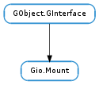

| can_eject() | |
| can_unmount() | |
| eject(flags, cancellable, callback, *user_data) | |
| eject_finish(result) | |
| eject_with_operation(flags, mount_operation, cancellable, callback, *user_data) | |
| eject_with_operation_finish(result) | |
| get_default_location() | |
| get_drive() | |
| get_icon() | |
| get_name() | |
| get_root() | |
| get_sort_key() | |
| get_symbolic_icon() | |
| get_uuid() | |
| get_volume() | |
| guess_content_type(force_rescan, cancellable, callback, *user_data) | |
| guess_content_type_finish(result) | |
| guess_content_type_sync(force_rescan, cancellable) | |
| is_shadowed() | |
| remount(flags, mount_operation, cancellable, callback, *user_data) | |
| remount_finish(result) | |
| shadow() | |
| unmount(flags, cancellable, callback, *user_data) | |
| unmount_finish(result) | |
| unmount_with_operation(flags, mount_operation, cancellable, callback, *user_data) | |
| unmount_with_operation_finish(result) | |
| unshadow() |
None
| Name | Parameters | Return | Description |
|---|---|---|---|
| changed | Emitted when the mount has been changed. | ||
| pre-unmount | This signal is emitted when the Gio.Mount is about to be unmounted. | ||
| unmounted | This signal is emitted when the Gio.Mount have been unmounted. If the recipient is holding references to the object they should release them so the object can be finalized. |
Bases: GObject.GInterface
The Gio.Mount interface represents user-visible mounts. Note, when porting from GnomeVFS, Gio.Mount is the moral equivalent of #GnomeVFSVolume.
Gio.Mount is a “mounted” filesystem that you can access. Mounted is in quotes because it’s not the same as a unix mount, it might be a gvfs mount, but you can still access the files on it if you use GIO. Might or might not be related to a volume object.
Unmounting a Gio.Mount instance is an asynchronous operation. For more information about asynchronous operations, see Gio.AsyncResult and Gio.Task. To unmount a Gio.Mount instance, first call Gio.Mount.unmount_with_operation () with (at least) the Gio.Mount instance and a Gio.AsyncReadyCallback. The callback will be fired when the operation has resolved (either with success or failure), and a #GAsyncReady structure will be passed to the callback. That callback should then call Gio.Mount.unmount_with_operation_finish () with the Gio.Mount and the #GAsyncReady data to see if the operation was completed successfully. If an error is present when Gio.Mount.unmount_with_operation_finish () is called, then it will be filled with any error information.
| Returns: | True if the mount can be ejected. |
|---|---|
| Return type: | bool |
Checks if mount can be eject.
| Returns: | True if the mount can be unmounted. |
|---|---|
| Return type: | bool |
Checks if mount can be mounted.
| Parameters: |
|
|---|
Ejects a mount. This is an asynchronous operation, and is finished by calling Gio.Mount.eject_finish () with the mount and Gio.AsyncResult data returned in the callback.
| Parameters: | result (Gio.AsyncResult) – a Gio.AsyncResult. |
|---|---|
| Raises: | GLib.GError |
| Returns: | True if the mount was successfully ejected. False otherwise. |
| Return type: | bool |
Finishes ejecting a mount. If any errors occurred during the operation, error will be set to contain the errors and False will be returned.
| Parameters: |
|
|---|
Ejects a mount. This is an asynchronous operation, and is finished by calling Gio.Mount.eject_with_operation_finish () with the mount and Gio.AsyncResult data returned in the callback.
| Parameters: | result (Gio.AsyncResult) – a Gio.AsyncResult. |
|---|---|
| Raises: | GLib.GError |
| Returns: | True if the mount was successfully ejected. False otherwise. |
| Return type: | bool |
Finishes ejecting a mount. If any errors occurred during the operation, error will be set to contain the errors and False will be returned.
| Returns: | a Gio.File. The returned object should be unreffed with GObject.Object.unref () when no longer needed. |
|---|---|
| Return type: | Gio.File |
Gets the default location of mount. The default location of the given mount is a path that reflects the main entry point for the user (e.g. the home directory, or the root of the volume).
| Returns: | a Gio.Drive or None if mount is not associated with a volume or a drive. The returned object should be unreffed with GObject.Object.unref () when no longer needed. |
|---|---|
| Return type: | Gio.Drive |
Gets the drive for the mount.
This is a convenience method for getting the Gio.Volume and then using that object to get the Gio.Drive.
| Returns: | a Gio.Icon. The returned object should be unreffed with GObject.Object.unref () when no longer needed. |
|---|---|
| Return type: | Gio.Icon |
Gets the icon for mount.
| Returns: | the name for the given mount. The returned string should be freed with GLib.free () when no longer needed. |
|---|---|
| Return type: | str |
Gets the name of mount.
| Returns: | a Gio.File. The returned object should be unreffed with GObject.Object.unref () when no longer needed. |
|---|---|
| Return type: | Gio.File |
Gets the root directory on mount.
| Returns: | Sorting key for mount or None if no such key is available. |
|---|---|
| Return type: | str |
Gets the sort key for mount, if any.
| Returns: | a Gio.Icon. The returned object should be unreffed with GObject.Object.unref () when no longer needed. |
|---|---|
| Return type: | Gio.Icon |
Gets the symbolic icon for mount.
| Returns: | the UUID for mount or None if no UUID can be computed. The returned string should be freed with GLib.free () when no longer needed. |
|---|---|
| Return type: | str |
Gets the UUID for the mount. The reference is typically based on the file system UUID for the mount in question and should be considered an opaque string. Returns None if there is no UUID available.
| Returns: | a Gio.Volume or None if mount is not associated with a volume. The returned object should be unreffed with GObject.Object.unref () when no longer needed. |
|---|---|
| Return type: | Gio.Volume |
Gets the volume for the mount.
| Parameters: |
|
|---|
Tries to guess the type of content stored on mount. Returns one or more textual identifiers of well-known content types (typically prefixed with “x-content/”), e.g. x-content/image-dcf for camera memory cards. See the shared-mime-info specification for more on x-content types.
This is an asynchronous operation (see Gio.Mount.guess_content_type_sync () for the synchronous version), and is finished by calling Gio.Mount.guess_content_type_finish () with the mount and Gio.AsyncResult data returned in the callback.
| Parameters: | result (Gio.AsyncResult) – a Gio.AsyncResult |
|---|---|
| Raises: | GLib.GError |
| Returns: | a None-terminated array of content types or None on error. Caller should free this array with GLib.strfreev () when done with it. |
| Return type: | [str] |
Finishes guessing content types of mount. If any errors occurred during the operation, error will be set to contain the errors and False will be returned. In particular, you may get an Gio.IOErrorEnum.NOT_SUPPORTED if the mount does not support content guessing.
| Parameters: |
|
|---|---|
| Raises: | |
| Returns: | a None-terminated array of content types or None on error. Caller should free this array with GLib.strfreev () when done with it. |
| Return type: | [str] |
Tries to guess the type of content stored on mount. Returns one or more textual identifiers of well-known content types (typically prefixed with “x-content/”), e.g. x-content/image-dcf for camera memory cards. See the shared-mime-info specification for more on x-content types.
This is an synchronous operation and as such may block doing IO; see Gio.Mount.guess_content_type () for the asynchronous version.
| Returns: | True if mount is shadowed. |
|---|---|
| Return type: | bool |
Determines if mount is shadowed. Applications or libraries should avoid displaying mount in the user interface if it is shadowed.
A mount is said to be shadowed if there exists one or more user visible objects (currently Gio.Mount objects) with a root that is inside the root of mount.
One application of shadow mounts is when exposing a single file system that is used to address several logical volumes. In this situation, a Gio.VolumeMonitor implementation would create two Gio.Volume objects (for example, one for the camera functionality of the device and one for a SD card reader on the device) with activation URIs gphoto2://[usb:001,002]/store1/ and gphoto2://[usb:001,002]/store2/. When the underlying mount (with root gphoto2://[usb:001,002]/) is mounted, said Gio.VolumeMonitor implementation would create two Gio.Mount objects (each with their root matching the corresponding volume activation root) that would shadow the original mount.
The proxy monitor in Gio.Vfs 2.26 and later, automatically creates and manage shadow mounts (and shadows the underlying mount) if the activation root on a Gio.Volume is set.
| Parameters: |
|
|---|
Remounts a mount. This is an asynchronous operation, and is finished by calling Gio.Mount.remount_finish () with the mount and Gio.AsyncResults data returned in the callback.
Remounting is useful when some setting affecting the operation of the volume has been changed, as these may need a remount to take affect. While this is semantically equivalent with unmounting and then remounting not all backends might need to actually be unmounted.
| Parameters: | result (Gio.AsyncResult) – a Gio.AsyncResult. |
|---|---|
| Raises: | GLib.GError |
| Returns: | True if the mount was successfully remounted. False otherwise. |
| Return type: | bool |
Finishes remounting a mount. If any errors occurred during the operation, error will be set to contain the errors and False will be returned.
Increments the shadow count on mount. Usually used by Gio.VolumeMonitor implementations when creating a shadow mount for mount, see Gio.Mount.is_shadowed () for more information. The caller will need to emit the Gio.Mount ::changed signal on mount manually.
| Parameters: |
|
|---|
Unmounts a mount. This is an asynchronous operation, and is finished by calling Gio.Mount.unmount_finish () with the mount and Gio.AsyncResult data returned in the callback.
| Parameters: | result (Gio.AsyncResult) – a Gio.AsyncResult. |
|---|---|
| Raises: | GLib.GError |
| Returns: | True if the mount was successfully unmounted. False otherwise. |
| Return type: | bool |
Finishes unmounting a mount. If any errors occurred during the operation, error will be set to contain the errors and False will be returned.
| Parameters: |
|
|---|
Unmounts a mount. This is an asynchronous operation, and is finished by calling Gio.Mount.unmount_with_operation_finish () with the mount and Gio.AsyncResult data returned in the callback.
| Parameters: | result (Gio.AsyncResult) – a Gio.AsyncResult. |
|---|---|
| Raises: | GLib.GError |
| Returns: | True if the mount was successfully unmounted. False otherwise. |
| Return type: | bool |
Finishes unmounting a mount. If any errors occurred during the operation, error will be set to contain the errors and False will be returned.
Decrements the shadow count on mount. Usually used by Gio.VolumeMonitor implementations when destroying a shadow mount for mount, see Gio.Mount.is_shadowed () for more information. The caller will need to emit the Gio.Mount ::changed signal on mount manually.